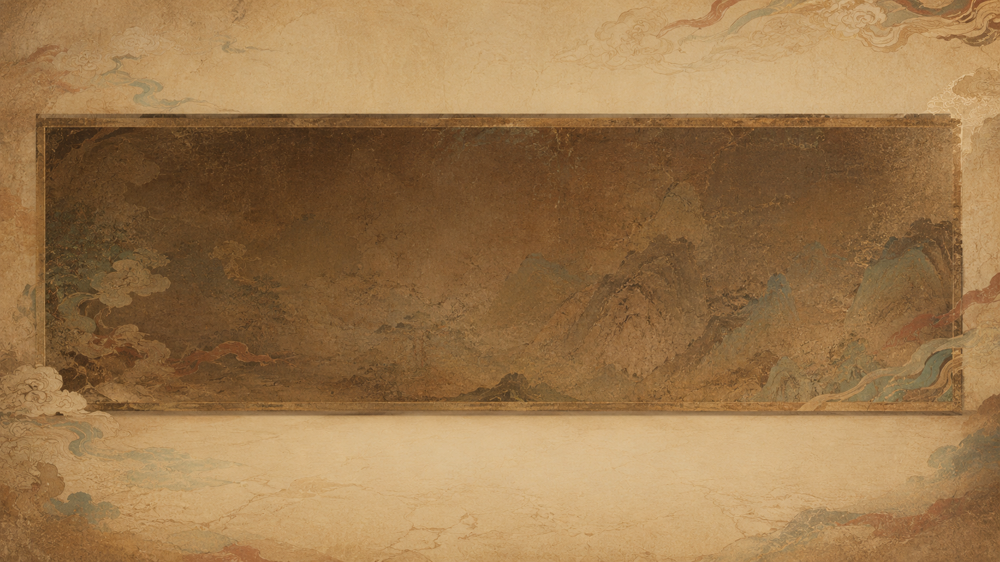
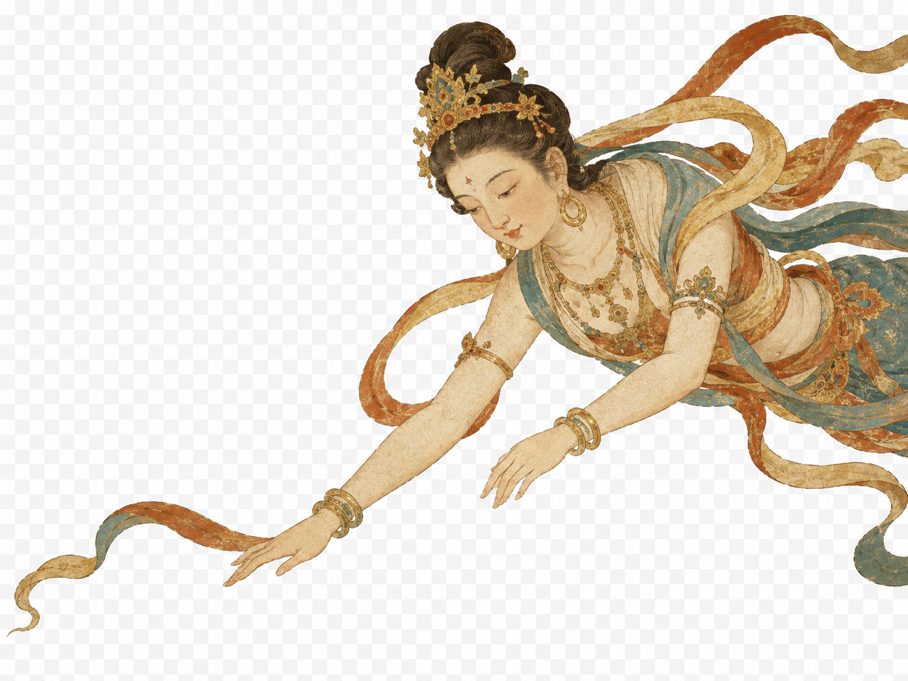
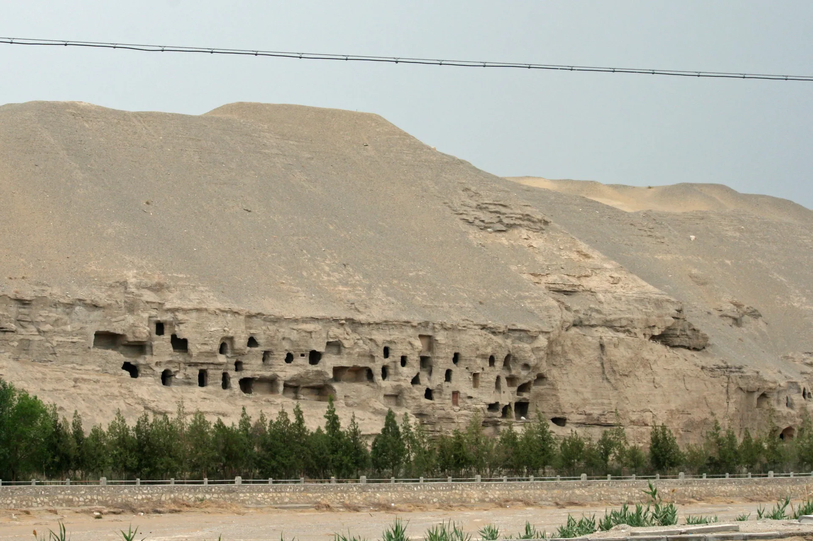
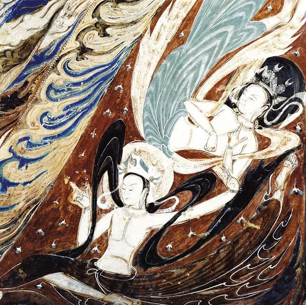
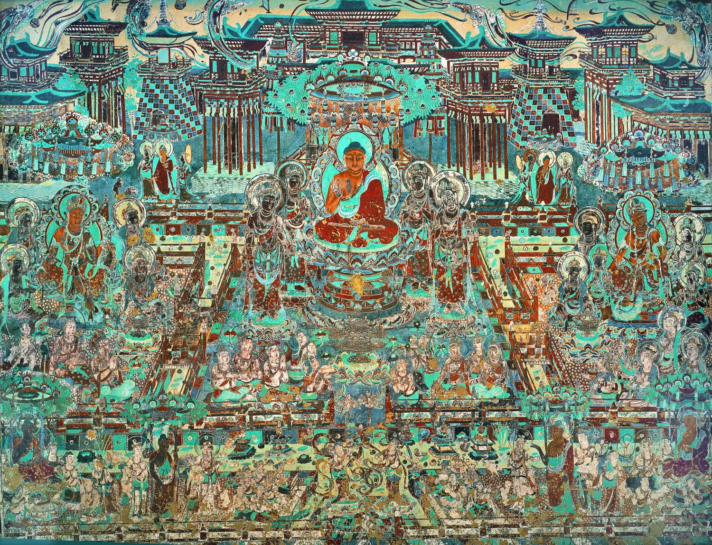
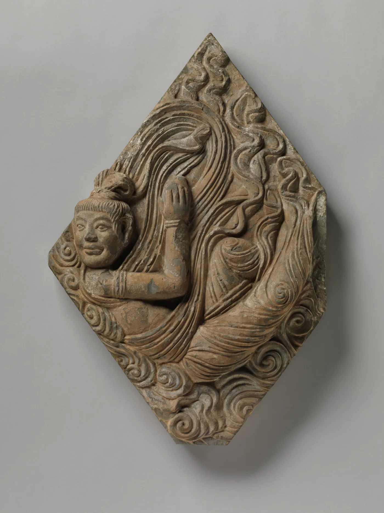

莫高窟的飞天，最初并不是为屏幕而生。
她们栖身在洞窟的墙壁与窟顶之间，借飘带而起，伴乐舞而行——没有翅膀，却显出飞行的姿态。石青、石绿、朱砂层层铺开，又在漫长岁月里慢慢褪去。
如今那些壁画已被保存、采集、修复和归档。但飞天如何被看见，仍是一个需要在转换中被讲述的故事——她从洞窟深处走向屏幕，从壁画残痕进入数字图像，从文化遗产转化为公共视觉符号。飞天仍在飞行，只是飞行的路径，已经不再只属于洞窟。
莫高飞天，如何被再度看见？
阅读入口
她本在洞窟的墙上。今天，她出现在短视频、妆造、文创和海外平台里。 从任意一条路径进入，最终都通向同一个问题：飞天如何被再度看见。

I
从残损壁画出发，理解保护为什么是观看的前提。

莫高窟的飞天，最初并不是为屏幕而生。
她们栖身在洞窟的墙壁与窟顶之间，借飘带而起，伴乐舞而行——没有翅膀，却显出飞行的姿态。石青、石绿、朱砂层层铺开，又在漫长岁月里慢慢褪去。
如今那些壁画已被保存、采集、修复和归档。但飞天如何被看见，仍是一个需要在转换中被讲述的故事——她从洞窟深处走向屏幕，从壁画残痕进入数字图像，从文化遗产转化为公共视觉符号。飞天仍在飞行，只是飞行的路径，已经不再只属于洞窟。
在洞窟里，飞天从不是孤立的图案，而是与佛像、经变画、供养人和乐舞共同构成的整体。

她们与佛像、经变画、供养人、乐舞场景和窟顶结构共同构成完整空间。身体位置、飞行方向、手中乐器和衣带走势，都决定了飞天如何被我们发现。
然而洞窟中的可见并不稳定。壁画长期暴露在复杂环境之中，许多飞天形象今天已经不是完整清晰的图像，而是由残存线条、局部色块和模糊轮廓共同构成。观众在壁画前看到的，也包括时间在图像上留下的痕迹。
没有保护，飞天会继续从墙面上消退；没有记录，许多细节会在后来的时间中难以追索。数字采集让飞天以高清图像进入档案系统，也让屏幕观看成为可能。
数字化让飞天获得了新的可见方式——不再只依赖现场观看，也可以在屏幕上被放大、对照和讲解。这是飞天从洞窟走向平台的技术前提。
短视频、讲解和AI复原让更多人接近莫高窟，但数字图像必须不断回到壁画本体。前者扩大观看范围，后者提供历史深度和空间依据。
飞天之所以能在平台和商品中被迅速认出，不是因为她被随意改造，而是因为她已形成一套稳定的视觉语言。这套语言是如何建立的？要回到壁画里找答案。
飞天并不是某一幅固定图像，而是一类不断演变的视觉母题。她能被传播，依赖的是长期形成且足够稳定的视觉语言。
从北凉到元代，飞天在不同时期和洞窟中呈现差异。但飘带、乐舞、反弹琵琶和敦煌色彩的组合足够稳定——使她在任何时代都能被一眼认出。点击各朝代节点，观察形态如何演变。

早期飞天线条厚重，保留印度与中亚图像痕迹，身体朴拙，飞行动势相对克制。
风化、起甲、酥碱不是抽象的保护术语——它们直接吞掉了壁画上原本可看的部分。残损、褪色和模糊轮廓并不是背景信息，而是飞天可见方式的一部分。
拖动滑块，可以看到从壁画残痕到数字读法的距离，也能看见保护与传播为何不可分。
点击图上的标记或上方标签，看每个部件从古意到今用的转译。
很多人今天第一次看见飞天，并不是在敦煌，而是在抖音、快手、B站、小红书或视频号里。平台改变了飞天被理解的顺序。
抖音和快手强调动作与视觉冲击；B站更适合长视频讲解；小红书把飞天转化为审美和生活方式；视频号和直播延长了观看时间。横轴是平台，纵轴是内容形式，色块深浅表示相对传播强度。
图 2：各平台主导的飞天内容形态（相对强度，示意数据，后续可替换为真实平台样本）。
洞窟观看是缓慢的，短视频观看则是快速的。舞姿、妆容、修复对比和视觉转场在几十秒内完成吸引；直播和讲解又把这种观看延长为持续停留。
飞天的可见度不只靠十几秒的短视频，还靠持续几个小时的现场直播撑着。单独一屏才能看清这种量级——才会意识到传播不只是碎片流量的积累。
国潮、敦煌舞、美学、AI修复、仿妆、研学和二创并列出现：有人把她看作审美资源，有人通过她进入传统文化，也有人关注技术复原。
把飞天、故宫、三星堆直接比较播放量并不公平。更有意义的是把它们统一到 0–100 的相对尺度，观察节奏：故宫更像稳定平台，三星堆更像事件尖峰，而飞天呈现越来越密集的小波动，逐渐从一次性爆点变成持续被调用的视觉常量。
当飞天进入文创和消费场景，她从影像、动作和话题，转化为可以购买、穿戴、收藏和展示的文化物件。

一件产品只是借用飞天图案，传播效果往往停留在审美层面。但如果它能够提示图像来源、呈现壁画细节，消费场景就可能变成文化传播的入口。
这条路径得以成立，依靠的是数字技术先把图像从墙面上完整地读出来。高清采集、AI修复、三维建模和AR互动，构成飞天从洞窟进入日常的技术前提。
多光谱与高分辨率影像保留肉眼难以捕捉的细节。
起甲、脱落、残缺区域被重新辨读，形成可解释图像。
平面壁画获得空间导航层，便于展示与教育。
洞窟图像被送到移动屏幕，进入个人观看场景。
图 5：从高清采集到互动展示，数字技术为后续平台传播和日常消费提供素材基础。
残损壁画被复原时，飞天从不可辨认的痕迹变成可观看、可讲述、可转译的图像。技术究竟给传播补回了多少东西，用眼睛感受比数字更直接。
如果一件产品只是借用图案，传播效果往往停留在审美层面。如果它能够提示图像来源和莫高窟语境，消费场景就可能成为文化传播的入口。
盲盒、手办、汉服、美妆、香氛、联名食品和数字藏品，让飞天不再只是被观看的图像，也成为进入日常生活的文化物件。
飘带适合转化为包装线条，敦煌色适合进入美妆和服饰，反弹琵琶适合成为拍摄姿势。飞天在商品中的出现，通常不是完整复制某一幅壁画，而是对若干识别元素的重新组合。当这些元素不断被抽取，文化来源可能随之变浅。
短视频制造向往，妆造激发旅行想象，文创产品延长记忆。公众可能因为一次平台观看走向敦煌，也可能因为一次敦煌旅行继续在社交媒体上分享飞天。
当飞天进入海外语境，她会获得新的可见度，也会面临新的解释关系。传播范围越广，语义差异也越明显。
博物馆展览、纪录片、舞蹈视频、游戏设计、社交平台——不同入口形成不同理解。飞天背后的宗教图像、丝路交流和敦煌历史，如果没有被说明，就可能被压缩为一种异域化的装饰图案。

非商业学术研究、课程展示和教育传播可优先开放使用。
开放 · 非商业品牌联名、广告、影视和商品化使用需要进入授权流程。
申请 · 付费可能误读、庸俗化或损害文化语义的再创作不应被放行。
限制使用数字资源按三档拆分：科研和教育免费使用；商业用途提交申请并支付费用；少数品类直接不允许商业再创作。顺着流程看完，就明白哪些飞天图能在哪种场景里被合法调用。
飞天飞得越远，授权就越不能绕开。这把复兴从乐观情绪拉回到制度层面——谁在使用，怎样使用，使用后是否保留文化来源。
“买盲盒就是因为飘带太好看，对我来说首先是美学。”
“敦煌妆造已经变成我的春季审美关键词。”
“看完讲解才真正理解反弹琵琶，顺手去查了莫高窟。”
“数字化让壁画获得第二次生命，但线条背后的意义不能只剩一个外壳。”
“喜欢这个趋势，但 AI 二创还保留原来的宗教和文化意味吗？”
“传播和保护必须一起推进，任何一边缺位都会把符号掏空。”
她被更多人看见，可能意味着文化遗产进入公共生活；也可能意味着复杂语境被压缩为视觉消费。飞天的破圈，是一次关于保护、传播、产业和边界的持续协商。
洞窟中的飞天提供历史深度，数字图像扩大观看范围，平台传播制造公共入口，文创消费延展日常接触，国际传播打开跨文化理解的可能。
莫高窟里的飞天仍在墙上，
屏幕里的飞天正在被更多人看见。
她从洞窟出发，经数字、平台、日常与海外，最终仍要把人带回敦煌——可见，是一条回环的路。